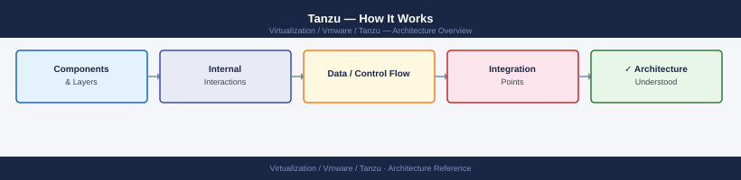

Tanzu — How It Works¶

vSphere with Tanzu Architecture¶
vSphere with Tanzu (Workload Management) embeds Kubernetes natively into the ESXi hypervisor layer. The Supervisor cluster runs directly on ESXi hosts via the Spherelet component — a kubelet-equivalent that executes in the ESXi kernel space. Supervisor control plane VMs and workload VMs are scheduled as native vSphere VMs, but managed by Kubernetes APIs exposed through vCenter.
graph TB
VC["vCenter Server\n(Workload Management enabled)"]:::blue
subgraph SUP["Supervisor Cluster"]
direction TB
CP1["Supervisor Control Plane VM 1\n(K8s API · etcd · scheduler)"]:::blue
CP2["Supervisor Control Plane VM 2\n(K8s API · etcd · scheduler)"]:::blue
CP3["Supervisor Control Plane VM 3\n(K8s API · etcd · scheduler)"]:::blue
ESX1["ESXi Host (Spherelet)\nvSphere Pods host"]:::green
ESX2["ESXi Host (Spherelet)\nvSphere Pods host"]:::green
end
subgraph NS1["Supervisor Namespace 1\n(resource quota enforced)"]
direction TB
TKG1CP["TKG Control Plane VMs\n(kubeadm / KCP)"]:::blue
TKG1W["TKG Worker VMs\n(MachineDeployment)"]:::green
SEG1["NSX-T Segment\n(isolated per namespace)"]:::amber
LB1["Load Balancer VIP\n(NSX-T or AVI — TKG API server)"]:::amber
end
subgraph NS2["Supervisor Namespace 2\n(resource quota enforced)"]
direction TB
TKG2CP["TKG Control Plane VMs\n(kubeadm / KCP)"]:::blue
TKG2W["TKG Worker VMs\n(MachineDeployment)"]:::green
SEG2["NSX-T Segment\n(isolated per namespace)"]:::amber
LB2["Load Balancer VIP\n(NSX-T or AVI — TKG API server)"]:::amber
end
HAR["Harbor Registry\n(image supply for TKG nodes)"]:::purple
VC -->|"workload management\nenables Supervisor"| SUP
SUP -->|"vSphere Namespace\nprovisioning"| NS1
SUP -->|"vSphere Namespace\nprovisioning"| NS2
HAR -->|"OCI images pulled\nby worker nodes"| TKG1W
HAR -->|"OCI images pulled\nby worker nodes"| TKG2W
LB1 -->|"exposes K8s API"| TKG1CP
LB2 -->|"exposes K8s API"| TKG2CP
classDef blue fill:#2563eb,stroke:#1d4ed8,color:#fff
classDef green fill:#15803d,stroke:#166534,color:#fff
classDef amber fill:#b45309,stroke:#92400e,color:#fff
classDef purple fill:#7c3aed,stroke:#6d28d9,color:#fffSupervisor Cluster Components¶
| Component | Location | Role |
|---|---|---|
| Supervisor Control Plane VMs (3x) | ESXi hosts | K8s API server, etcd, controller-manager, scheduler |
| Spherelet | ESXi kernel (each host) | Node agent — registers ESXi host as a K8s node |
| Workload Management Service | vCenter | Orchestrates Supervisor lifecycle, integrates with NSX/AVI |
| NSX-T / AVI LB | External | Load balancer for Supervisor API and workload services |
| vSphere Namespace Controller | Supervisor | Manages vSphere Namespace resources (quotas, storage policies) |
| NCP (NSX Container Plugin) | Supervisor | Syncs K8s network resources to NSX-T |
| vSphere CSI Driver | Supervisor + workload clusters | Provisions FCD-backed PVCs from vSAN/VMFS |
Spherelet and ESXi-Native Pods¶
Supervisor hosts can run two pod types:
- vSphere Pods — OCI containers running directly on ESXi via CRX (Container Runtime for ESXi). Each pod gets its own lightweight VM-based isolation. No guest OS overhead. Uses same scheduling path as VMs.
- TKG Service VMs — Full K8s node VMs provisioned by the TKG Service controller from a
TanzuKubernetesClustermanifest. These appear as regular vSphere VMs managed by CAPI.
vCenter
└── Workload Management
└── Supervisor Cluster (K8s API)
├── vSphere Namespace: team-a
│ ├── TanzuKubernetesCluster: prod-cluster
│ └── vSphere Pods (if CRX enabled)
└── vSphere Namespace: team-b
└── TanzuKubernetesCluster: dev-cluster
vSphere Namespace Concept¶
A vSphere Namespace is a Kubernetes namespace on the Supervisor cluster with additional vSphere-specific attributes applied at the platform level:
- Resource quotas — CPU, memory, and storage limits enforced by vSphere before K8s scheduling
- Storage policies — maps vSphere storage policies to K8s StorageClasses available within the namespace
- Permissions — vCenter SSO users/groups assigned Owner/Edit/View roles (propagate to K8s RBAC)
- VM classes — defines allowed VM sizes (guaranteed/best-effort) for TKG workload cluster nodes
- Content library — OVA/OVF templates for provisioning TKG node VMs
# TanzuKubernetesCluster CRD — applied against the Supervisor namespace
apiVersion: run.tanzu.vmware.com/v1alpha3
kind: TanzuKubernetesCluster
metadata:
name: prod-cluster
namespace: team-a
spec:
topology:
controlPlane:
replicas: 3
vmClass: best-effort-medium
storageClass: vsan-default
tkr:
reference:
name: v1.28.8---vmware.1-tkg.2
nodePools:
- name: worker-pool-1
replicas: 5
vmClass: best-effort-large
storageClass: vsan-default
volumes:
- name: containerd-storage
mountPath: /var/lib/containerd
capacity:
storage: 50Gi
Storage Policies for PVCs¶
When a StorageClass references a vSphere storage policy, PVC provisioning triggers the vSphere CSI driver to create a First Class Disk (FCD) on the backing datastore. The FCD is presented as a block device to the pod.
apiVersion: storage.k8s.io/v1
kind: StorageClass
metadata:
name: vsan-default
provisioner: csi.vsphere.vmware.com
parameters:
storagepolicyname: "vSAN Default Storage Policy"
reclaimPolicy: Delete
volumeBindingMode: WaitForFirstConsumer
allowVolumeExpansion: true
# PVC that triggers FCD provisioning
apiVersion: v1
kind: PersistentVolumeClaim
metadata:
name: app-data
spec:
accessModes:
- ReadWriteOnce
storageClassName: vsan-default
resources:
requests:
storage: 20Gi
TKG Standalone — Workload Cluster Lifecycle¶
Tanzu Kubernetes Grid standalone (TKG) uses Cluster API (CAPI) to provision and manage K8s clusters across infrastructure providers (vSphere, AWS, Azure). The management cluster is itself a K8s cluster running CAPI controllers.
Architecture Layers¶
tanzu CLI / kubectl
│
▼
Management Cluster (runs CAPI controllers)
├── CAPI: Cluster, Machine, MachineDeployment, MachineSet
├── CAPV: VSphereMachine, VSphereVM, VSphereMachineTemplate
├── KCP: KubeadmControlPlane — bootstraps control plane nodes
└── CABPK: KubeadmConfig — node cloud-init / ignition
│
▼
Workload Clusters (target K8s clusters)
├── Control Plane nodes (1 or 3 — managed by KCP)
└── Worker nodes (MachineDeployment — scalable independently)
Cluster API Reconciliation Flow¶
When tanzu cluster create runs, it renders CAPI manifests from a cluster config template and applies them to the management cluster:
Clusterresource created → CAPI core controller creates infrastructure reference- CAPV controller provisions VMs in vSphere using OVA from the content library
KubeadmControlPlanebootstraps control plane VMs with kubeadm init/joinMachineDeploymentmanages worker replicas — rolling updates on template change- CNI (Antrea or Calico) is deployed via add-on once nodes are ready
- Cluster reaches Ready state → kubeconfig stored as a Secret in management cluster namespace
Cluster Plans¶
| Plan | Control Plane Nodes | Min Workers | etcd | Use Case |
|---|---|---|---|---|
| dev | 1 | 1 | Single | Dev/test — no HA, lower resource cost |
| prod | 3 | 3 | Stacked HA | Production — survives single node failure |
| custom | Any odd number | Any | Stacked or external | ClusterClass-driven, per-org standards |
# dev plan cluster config
CLUSTER_PLAN: dev
CONTROL_PLANE_MACHINE_COUNT: 1
WORKER_MACHINE_COUNT: 2
CONTROL_PLANE_MACHINE_TYPE: "" # uses VM class
WORKER_MACHINE_TYPE: ""
# prod plan
CLUSTER_PLAN: prod
CONTROL_PLANE_MACHINE_COUNT: 3
WORKER_MACHINE_COUNT: 5
Networking Models¶
NSX-T for Supervisor (Recommended)¶
NSX-T provides overlay networking for both the Supervisor cluster and TKG workload clusters via Geneve encapsulation over standard VLAN uplinks.
Physical Network (uplink VLANs)
│
T0 Gateway (BGP/static to ToR switches)
│
T1 Gateway (per-namespace or shared)
├── Segment: Supervisor Management (control plane VMs — /27 or larger)
├── Segment: Supervisor Workload (pod CIDR — e.g. 100.64.0.0/16)
└── Segment: TKG Cluster Networks (per cluster — allocated from pool)
NSX Load Balancer (virtual servers):
├── Supervisor API VIP (4 LB rules → 3 control plane VMs)
└── Service type:LoadBalancer VIPs (one per K8s Service)
Key NSX-T objects provisioned automatically:
- LoadBalancerService per Supervisor namespace (using Small/Medium/Large LB size)
- VirtualServer + Pool per K8s Service type: LoadBalancer
- Tier-1 gateway and segments per vSphere Namespace (with isolation option)
- Distributed Firewall rules from K8s NetworkPolicy objects (via NCP)
AVI (NSX Advanced Load Balancer) Integration¶
For environments without NSX-T. Uses vSphere Distributed Switch for pod/node networking, with AVI providing L4 load balancing only.
TKG Cluster (VDS networking)
└── Service (type: LoadBalancer)
└── AKO (Avi Kubernetes Operator — pod in kube-system)
└── AVI Controller API
└── AVI Service Engine VMs → VIP on VDS portgroup
AKO watches K8s Service and Ingress objects, creates corresponding objects in AVI:
- Service type: LoadBalancer → AVI Virtual Service (L4)
- Ingress → AVI Virtual Service (L7) with SNI routing
Harbor Registry Integration¶
Harbor is deployed as either a standalone OVA VM or as Tanzu Packages on a K8s cluster.
Image Trust — Cosign Signing¶
# Generate a key pair
cosign generate-key-pair
# Sign an image after push
cosign sign --key cosign.key harbor.example.com/myproject/myapp:v1.0.0
# Verify signature
cosign verify --key cosign.pub harbor.example.com/myproject/myapp:v1.0.0
# Configure Harbor to enforce content trust (per project):
# Harbor UI → Project → Configuration → Enable Content Trust
# → Only signed images are pullable from this project
Vulnerability Scanning¶
Harbor integrates with Trivy (default in Harbor 2.x) or Clair for CVE scanning:
# Trigger scan via Harbor API
curl -u admin:password -X POST \
"https://harbor.example.com/api/v2.0/projects/myproject/repositories/myapp/artifacts/v1.0.0/scan"
# Check scan results
curl -u admin:password \
"https://harbor.example.com/api/v2.0/projects/myproject/repositories/myapp/artifacts/v1.0.0/additions/vulnerabilities"
Project-level scan policy: Harbor UI → Project → Configuration → Automatically scan images on push.
RBAC and Project Structure¶
| Harbor Role | Push | Pull | Manage Members | Manage Configs |
|---|---|---|---|---|
| Project Admin | Yes | Yes | Yes | Yes |
| Maintainer | Yes | Yes | No | No |
| Developer | Yes | Yes | No | No |
| Guest | No | Yes | No | No |
| Limited Guest | No | Yes (no list) | No | No |
TAP Supply Chain Concept¶
Tanzu Application Platform implements a Cartographer-driven supply chain — a composable, GitOps-aware pipeline from source code to running workload.
Supply Chain Types¶
| Supply Chain | Steps | Use Case |
|---|---|---|
| basic-image-to-url | image → deploy | Pre-built images, no source needed |
| source-to-url | source → build → deploy | Source-based, scan-free |
| source-test-scan-to-url | source → test → scan → build → scan → deploy | Production hardened |
Supply Chain Flow (source-test-scan-to-url)¶
Developer commits to Git
│
▼
Workload CR applied to K8s
│
[1] SourceResolver → FluxCD GitRepository watches branch/tag
↓ source revision
[2] Tester → Tekton Pipeline (unit tests, lint)
↓ pass
[3] SourceScanner → Grype scans source dependencies for CVEs
↓ pass (policy)
[4] ImageBuilder → kpack builds OCI image via CNB buildpacks → pushes to Harbor
↓ image digest
[5] ImageScanner → Grype scans built image for CVEs
↓ pass (policy)
[6] ConfigProvider → Cartographer Convention applies PodSpec patches (resource limits, env)
↓ K8s manifests
[7] ConfigWriter → Writes rendered manifests to Git (GitOps repo)
↓ commit
[8] Deployer → FluxCD Kustomization applies to target namespace
↓
Running Knative Service or Deployment
Workload CR¶
apiVersion: carto.run/v1alpha1
kind: Workload
metadata:
name: my-app
namespace: dev-team
labels:
apps.tanzu.vmware.com/workload-type: web
spec:
source:
git:
url: https://github.com/example/my-app
ref:
branch: main
build:
env:
- name: BP_JVM_VERSION
value: "17"
params:
- name: annotations
value:
autoscaling.knative.dev/minScale: "2"
serviceAccountName: default
resources:
requests:
memory: 512Mi
cpu: 250m
limits:
memory: 1Gi
cpu: 500m
TAP Profiles¶
| Profile | Installed Components | Typical Cluster |
|---|---|---|
| full | All TAP components | Single-cluster dev/staging |
| iterate | IDE plugins, supply chains, App Live View | Developer inner-loop cluster |
| build | Supply chains, kpack, Tekton, Grype | CI/build cluster |
| run | CNRs (Knative), ingress, App Live View runtime | Production runtime cluster |
| view | TAP GUI (Backstage), Metadata Store | Observability/portal cluster |